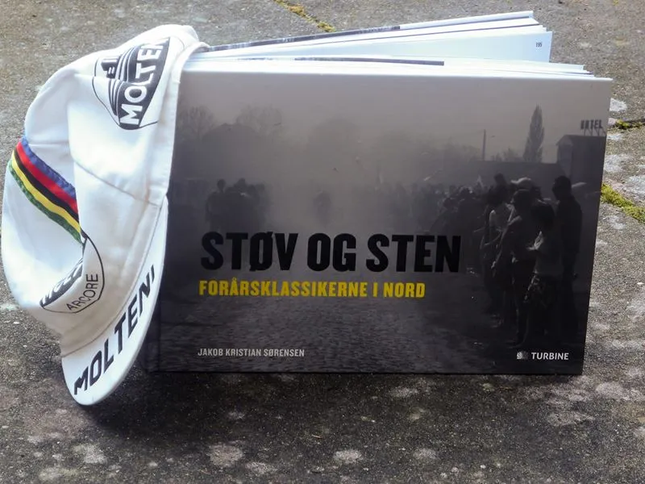

Anmeldelse af “Støv og sten”: Bogen om brostensklassikerne

Holdets løjtnant, Kasper Sørensen, har givet sig selv den bedste optakt til Flanderen Rundt og søndagens Paris-Roubaix. Han har læst bogen “Støv og sten – forårsklassikerne i nord” af Jakob Kristian Sørensen
Af Kasper Sørensen
Jeg har, helt ude på møtrikken, kværnet sig igennem en flot fotobog om vores elskede brostensklassikere.



Midt i optakterne til sidste weekend’s Flanderen Rundt, havde Chefen for Gruppo Sportivo Velopresse, også kendt som Il Dottore (Jakob Kristian Sørensen), inviteret til release på hans nye bog “Støv og Sten – Forårsklassikerne i Nord”.
Bogrelease med belgiske øl og pommes
I et snedkerværksted på Godsbanen i Aarhus, blev der budt på mørke belgiske øl og sprøde fritter.
Dét kunne jeg ikke sige nej til! Bogen er en fotografisk hyldest til de seks uger i foråret, hvor det professionelle cykelfelt turnerer de belgiske småveje.
For som han selv sagde til mig i værkstedet, så er det her bare et lille forsøg på at give noget tilbage til belgierne, hvis løb har givet ham så meget.
Kronologisk fotokollage
Bogen, på 255 sider, består af en samling billeder fra de seneste 5-6 år.
Indpakningen er brostensløbene som helhed.
Ikke med fokus på monumenterne eller forårsklassikerne, som man har for vane at se dem præsenteret.
Det er en kronologisk gennemgang de syv klassiske løb; Omloop Het Nieuwsblad, Kuurne-Brussel-Kuurne, Dwars Door Vlaanderen, E3 Harelbeke, Gent-Wevelgem, Flanderen Rundt og Paris-Roubaix. Alle på lige fod
Interviews med professionelle ryttere
Hvert kapitel er krydret med interviews fra nogle af Danmarks bedste brostensryttere, bl.a.
Lars Bak, Rolf Sørensen, Brian Holm og Matti Breschel (som også fortæller om sin fanklub i Belgien).
De giver både professionel indsigt i taktik og udførelse, samtidig med at de låner et verbalt sprog til bogens billeder.
– Jeg vinder med 12 cm. På stålcykel og flade fælge, Lars Michaelsen om hans sejr i 95’.
Jakob har sin helt egen fotografiske stil
Billederne giver oplevelsen af at være tilstede i vejkanten, mellem de belgiske fans, i modsætning til at side bag på en pressemotorcykel.
Jeg var selv nede og opleve Flanderen Rundt i 2014, og billederne giver mig fornemmelsen af genkendelsens rus; fra opkørslen i byen Kwaremont og på markerne omkring Paterberg.
– Den sidste kilometer før brostenene gør man sig så bred, at ingen kan komme forbi, og hvis de gør alligevel, skubber man dem i grøften”, Brian Holm om indkørslen til brostensstykkerne.
Jeg er ikke i tvivl om, at Jakob ser cykelløb som en fan – hellere i vejsiden end foran skærmen.
Han fanger de glimt, som for evigt har brændt sig fast på nethinden.
Dem som aldrig bliver vist på TV, men som af en eller anden uforklarlig grund, har gjort indtryk nok til at blive siddende:
- Podiepigernes bare ben i gråvejr ved indskrivningen
- tilskuernes lange skygger på de blotlagte brosten
- det riflede gummiunderlag på podiet
- soigneur’ens våde gummisko i forplejningszonen
- halvtomme plastikkrus på asfalten
- og en Eddy Merckx Motorola stålramme smidt på en græsskråning.
Alt det, som cykelløb er i 90% af tiden, for en tilskuer i vejkanten.
– De drikker og spiser klassikerne”, Christopher Juul om publikum i Flanderen, side 13.
Det er de små ting, der tæller
Som en anden flamsk-inspireret kunstner, Vermeer, bringer Jakobs billeder anerkendelse til de små ting, som ignoreres af TV, men som udgør den kulturelle grundsten belgiernes cykelløb.
For det er dét, som karakteriserer de her løb, det er deres løb.
Mine absolut favoritbilleder findes i kapitlet om Omloop Het Nieuwsblad.
Billederne viser Belgien fra landets mest grå og beskidte side efter et forårsregnvejr.
Man skal knibe øjnene sammen for at skelne den mørke himmel fra skov, mark og asfalt.
Det minder mere om en sen efterårsaften end en tidlig eftermiddag i marts.
Så mørkt at motorcyklernes forlys giver det tydeligste genskær i vejkantens vandpytter, og lyser om kap med CCC-Sprandi-Polkowice’s orange trøjer.
Flere steder er billederne præsenteret som små sekvenser, i serier af tre-fire billeder.
Som når Boonen, med Cancellara på hjul, på vej op af en af de stejle brostensstykker i Flanderen Rundt, bare kommer tættere og tættere på kameraets blinkende linse.
– Den sidste kilometer før brostenene gør man sig så bred, at ingen kan komme forbi, og hvis de gør alligevel, skubber man dem i grøften, Brian Holm om indkørlsen til brostensstykkerne, side 104.
Af cykelfans til cykelfans
Kaster man et blik bagerst i bogen med listen over navne, som skal have en tak, genkender jeg (trods min korte tid i byen) flere navne fra det Aarhusianske cykelmiljø.
Jeg ved ikke hvordan de har bidraget, men Jakob bruger og involverer folk omkring sig.
Folk som har samme passion og fascination for cykelsporten som han selv.
Det skinner tydeligt igennem, og det er fedt at blive inviteret indenfor i det univers.
– Jeg havde squ en selvtillid der dårligt kunne være i holdbilen, Brian Holm om hans første E3 Harelbeke, side 103.
Efter den sidste belgiske øl var drukket til bogrelease’en, forsvandt Il Dottore lydløst til Belgien for at følge Flanderen Rundt og Paris-Roubaix.
Det kan godt være, han netop har sendt en bog på gaden, men TV2 må vente, for der er altså cykelløb, som SKAL ses fra vejsiden.
– Belgien er cykelsportens tekniske og taktiske universitet, Rolf Sørensen om hans belgiske cykelopdragelse, side 173.